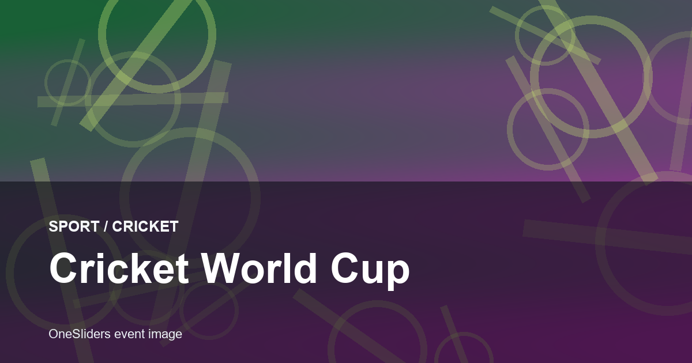
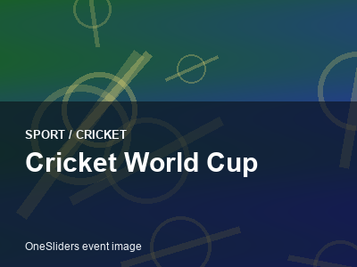

Cricket event guide
Cricket World Cup
A compact OneSliders guide to Cricket World Cup: what it is, how the current edition works and which parts matter most.
First trackedEvergreen event
FrequencyEvery 4 years
Next edition2027
Format sizeCompetition stages
History viewEdition results and parts
Use the year switcher for recent editions. The selected edition stays inside this framed sport view.

More CricketInterested in more Cricket?Explore related events, places and calendar moments.